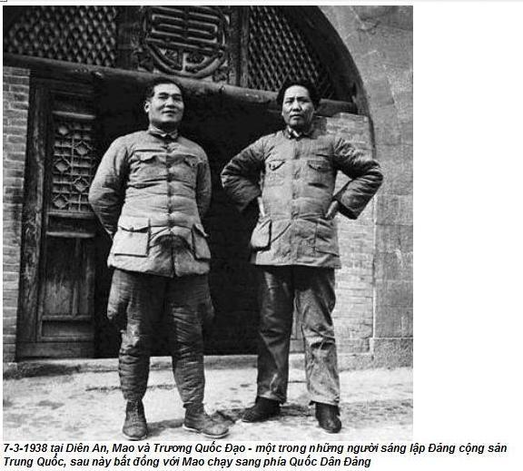

Chương 5

gày 25 tháng 4 năm 1955, gần ba giờ chiều, cô y tá trưởng bệnh viện Trung Nam Hải với vẻ mặt căng thẳng, bối rối, báo cho tôi biết:
- Nhóm Một vừa gọi điện sang – Cô ta thì thào – Đồng chí phải đến ngay bể bơi.
“Nhóm Một” là bí danh của Mao và những cộng sự của ông ta. “Bể bơi” ám chỉ Mao chủ tịch. Lúc đó ở Trung Nam Hải có hai bể bơi. Một bể ngoài trời, tất cả mọi người đều được phép sử dụng trong mùa hè. Bể bơi khác xây trong nhà, dành cho cán bộ lãnh đạo cao cấp của đảng. Tuy vậy, dần dần bể bơi này chỉ mình Mao sử dụng, sau này ông thường hay tới đó, đến nỗi người ta phải xây thêm một phòng ngủ, phòng tiếp khách và phòng làm việc cho ông ngay cạnh bể bơi. Năm 1967, khi Cách mạng văn hoá đang diễn ra, Mao dọn đến ở hẳn tại ngôi nhà có bể bơi đó cho đến khi ông gần qua đời. Tại đây, ông đã đón tiếp tổng thống Nixon, thủ tướng Tanaka và nhiều chính khách nước ngoài khác. Ngay từ năm 1955 chữ “bể bơi” đã luôn gắn liền với Mao.
Chủ tịch đã đích thân ra lệnh gọi tôi.
Như thường lệ, hôm đó công việc ở bệnh viện rất bận rộn, một số bệnh nhân đã kiên tâm chờ đợi hàng giờ liền chờ khám. Tôi phải khám cho họ trước khi đến bể bơi bằng xe đạp. Lý Ẩm Kiều, đội phó đội vệ sĩ của Mao vội vã đi về phía tôi.
- Tại sao đồng chí đến muộn thế? – anh ta hỏi với vẻ đầy lo âu – Đồng chí bắt Chủ tịch phải chờ à?
- Tôi không thể bỏ bệnh nhân mà đi – tôi giải thích – Chủ tịch ốm à? Chủ tịch có cần chăm sóc thuốc men không?
- Không, Chủ tịch chỉ muốn nói chuyện với đồng chí.
Lý Ẩm Kiều đưa tôi đến khu bể bơi. Mao đang nằm trên phản gỗ, say sưa đọc sách. Ông khoác một chiếc áo tắm bằng vải bông lên tấm thân trần, quấn một chiếc khăn bông ngang hông. Trông ông mạnh khỏe, to lớn như lần đầu tiên tôi thấy ông trên khán đài ở quảng trường Thiên An Môn. Ông có đôi vai rộng, bụng phệ, sắc mặt hồng hào, tóc vẫn đen đen nhánh và dày, trán rộng, da bóng, không có lông tơ. Cặp đùi của ông gầy, hai bàn chân thô, xỏ đôi tất màu cà phê. Lý Ẩm Kiều báo tôi đã đến, tôi liền xin lỗi ông vì sự chậm trễ, giải thích vì phải khám nốt số bệnh nhân đã ngồi chờ hàng tiếng đồng hồ. Mao không hề bực mình. Ông để quyển sách sang bên, rồi bảo Lý mang một chiếc ghế đến, vì thế tôi ngồi sát chủ tịch. Khi tiếp khách, số vệ sĩ của Mao thường tăng gấp đôi, một nhóm bốn người túc trực dưới sự điều khiển của một đội, họ cắt nhau túc trực phục vụ ngày cũng như đêm 24/24.
- Trương Trí Đông chẳng bao giờ ăn đúng giờ, ngủ đúng giờ – Mao giải thích – tự ví mình với một quan chức cao cấp trong triều đại nhà Thanh – Tôi cũng như Trương, tỉnh dậy là đến đây ngay. Bây giờ mấy giờ rồi?
- Bốn rưỡi chiều ạ – tôi trả lời.
- Giờ này đối với tôi vẫn còn là bình minh. Đồng chí dậy lúc mấy giờ?
Tôi lúng túng. Vì sau bữa ăn trưa phần lớn người Trung Quốc thường chợp mắt một chút, tôi vẫn chưa hề biết thói quen của Mao, nên tôi không dám chắc ông muốn biết tôi dậy sau giấc ngủ trưa vào lúc nào hay tôi dậy vào buổi sáng lúc mấy giờ.
- Buổi sáng tôi thường dậy lúc hơn 6 giờ – cuối cùng tôi đã nói – buổi trưa tôi chợp mắt một chút ạ.
- Đồng chí là bác sĩ – Mao vừa cười vừa nói – nên đồng chí mới lưu tâm đến sức khỏe và cuộc sống của đồng chí theo thời gian biểu một cách nghiêm ngặt.
Trong cái nhìn của Mao, ông tỏ ra là người khôn ngoan, nhân ái – bằng điệu bộ của ông nhiều hơn bằng lời nói. Tôi bị ông chinh phục, vì tôi cảm thấy mình đang đối diện với một người vĩ đại.
Ông hút thuốc lá của Anh, mác “555”. Khi hút, ông dùng thêm tẩu.
- Tống Khánh Linh tặng tôi cái tẩu này – ông ám chỉ quả phụ của Tôn Trung Sơn và khuyên nên dùng tẩu, vì bên trong có thêm đầu lọc để giảm hàm lượng nicotine – Tôi đã hút thuốc từ nhiều năm nay nhưng luôn tự hỏi, chất nicotine đã gây tác hại như thế nào. Đồng chí có hút thuốc không?
- Tôi có hút, nhưng không nhiều. Buổi tối, sau giờ làm việc tôi thường hút ba hoặc bốn điếu.
- Đồng chí là bác sĩ hút thuốc đầu tiên mà tôi biết.
Ông nhìn tôi vừa cười chế nhạo tinh quái vừa bập bập hơi thuốc.
- Hút thuốc cũng là phương pháp luyện tập hít thở tốt đúng không?
Tôi không biết ông nói đùa hay nói thật, nên tôi chỉ cười, không nói gì. Mao nhìn tóc tôi, rồi nói:
- Đồng chí mới trên 30 tuổi, sao tóc bạc nhiều hơn tôi thế?
Tôi đáp, tóc tôi bạc trước tuổi là theo gen di truyền.
- Cứ theo tóc mà phán, tôi già hơn Chủ tịch nhiều.
Mao cười:
- Đồng chí nịnh tôi chứ gì?
Dần dần tôi đã bạo hơn.
Mao hỏi tôi về việc học hành, về quá trình công tác và lắng nghe tôi nói.
- Từ khi đi học, đồng chí đã được giáo dục hoàn toàn theo kiểu Mỹ – ông nói – Trong cuộc chiến tranh giải phóng chống Tưởng Giới Thạch và Quốc dân đảng, người Mỹ đã ủng hộ Tưởng. Và ở Triều Tiên họ cũng đã chống lại chúng ta. Mặc dù vậy, tôi vẫn thích những người đã từng học ở các trường của Mỹ và Anh làm việc cho tôi. Tôi cũng rất thích ngoại ngữ. Người ta đã nhiều lần đề nghị tôi học tiếng Nga, nhưng tôi không thích. Tôi thích tiếng Anh hơn. Có lẽ đồng chí có thể giúp được tôi việc này?
Tôi đồng ý.
Mao ngừng nói, rồi nghiêm giọng:
- Mới có 15 tuổi, khi vẫn còn là trẻ con, đồng chí đã gia nhập tổ chức Phục hưng Quốc gia vào năm 1935. Khi đó, đồng chí chưa hề hiểu chính trị là gì. Ngoài ra, đồng chí đã kể những mẩu chuyện về quá khứ của đồng chí. Tôi thấy không có vấn đề gì.
Ông kể cho tôi nghe về Lý Thế Dân, vị hoàng đế lập ra triều đại nhà Đường (618-907), không những đã từ chối lời can ngăn của các quan thượng thư không nên dùng một viên tướng không rõ lai lịch mà còn tin tưởng cho hầu cận kế bên. Nhưng viên tướng đó lại có tài năng phi thường, đã phụng sự nhà vua rất tích cực. Chẳng bao lâu nhà vua và viên tướng đó đã thân thiết với nhau.
Mao nhìn tôi, nói:
- Điều gì đã khiến nhà vua tin tưởng? Đó chính là sự thành thật. Chúng ta cần phải thành thật với nhau. Quan hệ và sự thành thật của chúng ta cần phải trải qua thử thách trong một thời gian dài.
Mao nói tiếp:
- Trường hợp Hứa Thế Hữu làm thí dụ – Ông nhắc đến nhà sư từng là tư lệnh quân khu Nam Kinh – Hứa Thế Hữu nguyên là phe cánh của Trương Quốc Đạo, một trong những người sáng lập ra đảng cộng sản Trung Quốc nhưng đã chạy sang hàng ngũ Quốc dân đảng sau khi bất đồng với Mao. Hứa Thế Hữu không chịu chạy theo Trương Quốc Đạo, tuyên bố trung thành với Mao. “Trong đợt chỉnh huấn năm 1942 ở Diên An, nhiều người ngờ vực lòng trung thành của Hữu, vì trước đó đồng chí ấy đã từng làm việc cho Trương Quốc Đạo. Hứa bị phê phán kịch liệt. Đồng chí ấy đã thất vọng, nghĩ đến việc rút quân của mình khỏi Diên An. Khang Sinh muốn bắt, xử bắn đồng chí ấy. Tôi ra lệnh không được động thủ vội, muốn đích thân nói chuyện với đồng chí ấy trước đã. Nhiều người e ngại, nhưng tôi không sợ.
- Khi gặp tôi, Hứa bật khóc. Tôi nói, đừng khóc nữa, hãy trả lời hai câu hỏi đơn giản của tôi: “Đồng chí tin Trương Quốc Đạo hay tin tôi?” tôi hỏi. “Tất nhiên, tôi tin đồng chí”, Hứa trả lời. “Đồng chí muốn đi hay ở lại?”, tôi hỏi tiếp. “Tất nhiên là tôi muốn ở lại” đồng chí ấy đáp. Và tôi nói: “Được, đồng chí hãy ở lại. Đồng chí tiếp tục chỉ huy bộ đội của đồng chí. Thế thôi”. Từ đó, đâu phải Hứa Thế Hữu đã không hoàn thành nhiệm vụ của đồng chí ấy.
Tất cả mối lo lắng và nản lòng cả năm trời nay bỗng nhiên tôi cảm thấy vững tâm. Mao đã gạt bỏ nguồn gốc xuất thân, quá khứ chính trị của tôi. Với người khác, họ thường lấy quá khứ để phê phán, khai trừ tôi ra khỏi đảng, gây hoang mang. Mao chủ tịch nói:
- Lúc ấy anh hãy còn trẻ con, thành thật khai báo có gì sai?
Lý lẽ của chủ tịch thật đơn giản nhưng cũng nhờ đó quá khứ của tôi được xoá bỏ. Mao, vị lãnh tụ tối cao, không ai dám cưỡng lời. Tôi biết ơn chủ tịch, ông đã cứu tôi.

Một vệ sĩ đến chuẩn bị bữa ăn cho Mao. Chủ tịch mời tôi dùng cơm chung. Bữa ăn có 4 món, cá, thịt lợn trộn ớt thái lát, thịt cừu xào tỏi tây (món ăn khoái khẩu của chủ tịch), một đĩa rau. Trong khi đó các món ăn thường được đảo qua dầu nóng nhưng không rưới xì dầu, rắc thêm chút muối.
Vào giữa những năm 1950, hầu hết mọi người đều phải chịu đựng cuộc sống nghèo khó, thực phẩm thiếu thốn, dầu ăn trở thành một món xa xỉ. Nhưng tôi lại quen ăn những món nhúng dầu, vì vậy tôi đã phải cắn răng nhịn.
- Đồng chí không ăn à? – Mao có vẻ trách – Món cá ngon lắm, thịt lợn cũng thế.
- Tôi không đói lắm – tôi cáo từ.
Mãi sau này tôi mới quen với khẩu vị của ông.
- Đây là bữa sáng cũng là bữa trưa của tôi – ông nói – Mỗi ngày tôi ăn hai bữa là đủ. Hình như bây giờ chưa phải là giờ ăn của đồng chí?
Chúng tôi tiếp tục trò chuyện. Ông muốn biết tôi có quan tâm đến triết học không.
- Khi còn là sinh viên, chưa bao giờ tôi đọc những cuốn sách giáo khoa về nghề y của tôi kỹ lưỡng như tôi mong muốn – tôi đáp – Tôi không có thời gian để đọc những cuốn sách khác. Từ khi trở thành bác sĩ, tôi hoàn toàn dành thời gian điều trị cho bệnh nhân. Vì vậy, tôi không có điều kiện để đọc sách triết học. Nhưng tôi cũng đã đọc hai bài luận văn triết học của Chủ tịch: “Bàn về thực tiễn” và “Bàn về mâu thuẫn”.
Tôi rất thích hai bài này. Mao viết rất hay, giản dị, chính xác từng vấn đề. Bài “Bàn về thực tiễn” đã cho tôi thấy, sự hiểu biết đúng đắn chỉ có thể có được từ hành động hơn là từ những lý thuyết suông. Đó là một bài học bổ ích đối với một bác sĩ phẫu thuật tương lai. Bài “Bàn về mâu thuẫn” đã giải thích cho tôi, rằng người ta cần phải tìm hiểu bản chất của vấn đề thay vì tập trung vào hiện tượng bên ngoài của nó.
Mao cười:
- Trong cuộc kháng Nhật (1937-1945) tôi đã đề nghị đưa môn triết học vào Trường Đại học chống Nhật ở Diên An. Lúc đó tôi nghĩ, cần phải đúc kết kinh nghiệm cách mạng của ta, kết hợp giữa lý luận của chủ nghĩa Marx vào thực tế cụ thể ở Trung Quốc. Vì thế tôi đã viết cả hai bài này. Tôi nghĩ, bài “Bàn về thực tiễn” có ý nghĩa hơn bài “Bàn về mâu thuẫn”. Tôi viết “Bàn về mâu thuẫn” trong hai tuần, nhưng khi trình bày chỉ mất hai tiếng đồng hồ.
Sau này, mỗi khi nhớ lại, tôi đã tự hỏi, tại sao trong lần gặp đầu tiên, tôi lại gây ấn tượng tốt cho Mao như vậy, tôi thường nhớ đến cuộc trò chuyện này. Chỉ sau khi tôi trở thành người gần gũi với Mao, người cộng sự tin cậy nhất của ông, tôi mới biết, hai bài lý luận triết học quan trọng đối với Mao như thế nào. Mao coi đó là những bài học cơ sở đưa đến sự phát triển triết học của chủ nghĩa Marx-Lenin, tức là sự áp dụng “chủ nghĩa xã hội trong hoàn cảnh cụ thể của Trung Quốc”. Không những Liên Xô đã coi thường bài viết này mà còn gán cho những bài viết đó có tính chất xét lại. Tôi nghe tin đồn Stalin đã chỉ định P. F. Yudin, một triết gia Marxist- Leninnist nổi tiếng sang làm đại sứ Liên Xô ở Trung Quốc, nghiên cứu tư tưởng Mao, viết báo cáo tường trình về tư tưởng đó. Mao thường gặp Yudin, rồi hai người tranh luận với nhau đến tận đêm khuya. Nhưng Yudin đã cương quyết phủ nhận những quan điểm của Mao, cho đến khi Mao phật lòng. “Có phải triết học chỉ ở trong giới hạn của Marx-Lenin?“, đôi khi ông nặng lời, “Kinh nghiệm thực tế cách mạng Trung Quốc không thể tạo ra những tư tưởng triết học mới sao?”
Tuy nhiên buổi chiều hôm đó tôi vẫn chưa biết nhiều điều vì Mao vẫn còn dè dặt.
Ông nói:
- Tôi nghĩ, đồng chí nên đọc vài cuốn sách triết học. Là bác sĩ, điều đó có thể rất bổ ích đối với đồng chí. Tôi vừa mới đọc xong “Phép biện chứng tự nhiên của Engels”. Đồng chí cầm cầm lấy cuốn sách này. Tôi đã từng nghe, ở các trường Đại học bên Mỹ người có học vị hàn lâm cao nhất trong khoa học tự nhiên và thần học đều là tiến sĩ triết học. Rõ ràng, người Mỹ cũng có quan điểm cho rằng, trong tất cả các ngành khoa học, triết học đóng một vai trò quan trọng. Tôi đã nắm được điều quan trọng đó để nghiên cứu lịch sử. Nếu không biết gì về lịch sử, chúng ta không thể hiểu được cái gì đang xảy ra trong hiện tại. Và đồng chí cũng nên biết về văn học. Một khi là bác sĩ, thường xuyên giao tiếp với nhiều người, đồng chí chỉ sử dụng những kiến thức y học không thôi sẽ thấy lạc lõng, xa lạ. Đồng chí sẽ không chia xẻ tâm tư, tình cảm qua ngôn ngữ bình dân của mọi người.
Mao dừng một lát.
- Hôm nay như thế là đủ rồi. Trong tương lai chúng ta sẽ còn có nhiều dịp để thường xuyên trao đổi với nhau.
Ông chìa tay, bắt tay tôi thật chặt.
Hơn bảy giờ tối, tôi rời khu bể bơi, trong đầu chất chứa bao suy tư. Cuộc gặp gỡ có quá nhiều bất ngờ, từ chuyện Mao nằm trên giường, thói quen ngủ nghê kỳ quặc, lối nói khôi hài khuyến rũ, giúp tôi đỡ căng thẳng, khiến tôi nói hết cảm nghĩ của mình. Người ta sợ hãi ông đồng thời cũng rất dễ gần gũi, ông khôn ngoan nhưng không sùng bái thần tượng. Sự lo lắng đã biến mất, tự nhiên tôi cảm thấy yên tâm hơn so với những năm trước đây. Mặc dù giữa chúng tôi vẫn luôn luôn còn hố sâu ngăn cách, tôi biết rất ít về ông, nhưng tôi hiểu đã gặp một con người vĩ đại. Tôi rất tự hào vì được giao nhiệm vụ đấy tin cậy, phục vụ ông. Một dịp may tôi không dám mơ đến. Nhưng liệu tôi có hoàn thành nhiệm vụ hay không? Tôi nên chuẩn bị như thế nào? Người ta đã trông mong ở tôi điều gì? Tôi lập tức tìm gặp Uông Đông Hưng.
Uông hoan hỷ:
- Như vậy đồng chí ở bên Chủ tịch khá lâu, Chủ tịch chắc hài lòng lắm. Đồng chí nói gì với Chủ tịch?
Tôi báo cáo lại tất cả. Uông vui lắm:
- Thấy chưa, tôi đã bảo mà. Buổi đầu như thế quá tốt, hãy cố gắng lên.
Chuông điện thoại reo. Vệ sĩ của Mao là Lý Ẩm Kiều gọi điện đến. Tôi đã gây ấn tượng rất tốt đối với Mao, vượt qua được thử thách. Mao muốn tôi làm bác sĩ riêng của ông.
- Tôi sẽ báo việc này cho Bộ trưởng công an La Thuỵ Khanh – Uông nói – Bây giờ đồng chí về nghỉ đi. Nhớ giữ kín tất cả mọi chuyện đã xảy ra ngày hôm nay.
Lý Liên, người duy nhất được tôi kể cho nghe về nhiệm vụ mới. Cô ấy cũng nghĩ, hẳn tôi phải gây được thiện cảm tốt đẹp rồi. Nếu không Mao đã không nói chuyện với tôi lâu như vậy, lại còn mời tôi cùng dùng cơm. Tôi vui lắm, nhưng vẫn còn lo về công việc sắp tới, bảo:
- Hãy chờ xem liệu công việc có thuận lợi như vậy hay không đã?
Lý Liên hỏi:
- Mình có hiểu công việc cần đòi hỏi những gì không?
Hôm sau Phó Liêm Chương gọi điện mời tôi đến nhà ở đường Dây Cung. Tôi đạp xe đến. Lần này, ông đích thân ra tận cửa đón, bắt chặt tay tôi:
- Hôm qua đồng chí gặp Mao chủ tịch phải không? Kể cho tôi nghe đi.
Tôi không hiểu sao tin này lại lan nhanh đến như vậy. Phó Liêm Chương chăm chú lắng nghe tôi kể lại cuộc gặp gỡ giữa tôi và Mao. Câu chuyện làm ông phấn khích. Ông rót trà mời tôi, đi vòng quanh bàn trà nhỏ hai lần, lẩm bẩm: “Thật là may mắn”. Quay người lại nhìn tôi, ông ta cười, nói:
- Đồng chí thật may mắn. Lần đầu gặp Mao chủ tịch mà đồng chí đã được nói chuyện với Chủ tịch lâu như vậy. Đúng là một đặc ân.
Tôi cảm thấy Phó Liêm Chương ngạc nhiên ra mặt và có ý ghen tị.
Phó Liêm Chương kể:
- Năm 1934, lúc đó Chủ tịch mắc bệnh sốt rét, tôi đã cho Chủ tịch uống ký ninh. Khi Chủ tịch ra mặt trận lại giao phó cho tôi chăm sóc vợ Chủ tịch đang có mang, đó là nữ đồng chí Hạ Tử Trân. Tôi đã đỡ đứa con của họ chào đời.
Nhưng Phó Liêm Chương lại không nhớ chính xác Hạ Tử Trân có mấy con, chỉ biết mang máng có hai con trai trước khi cuộc Vạn Lý Trường Chinh xảy ra, hai đứa con phải bỏ lại cho gia đình nông dân nuôi dưỡng khi cộng sản rút lui phía Nam, khó khăn lắm sau này mới tìm được. Hai má Phó nóng bừng vì phấn kích khi ông nhớ lại thời kỳ đó. Những hạt mồ hôi lăn trên trán, ông nhấp vài ngụm nước đun sôi, bảo:
- Mình không uống trà hoặc bất cứ chất kích thích nào.
Phó nói tiếp, lái câu chuyện sang hướng khác.
- Sau đó, Chủ tịch đã cứu tôi. Lần đó tôi bị cáo buộc là người của Quốc dân đảng, nhưng Mao chủ tịch đã đứng ra bảo vệ. Hồi trẻ, tôi mắc bệnh lao, lần đó Chủ tịch cũng rất tốt với tôi. Trong cuộc Vạn Lý Trường Chinh, khi mọi người khác phải đi bộ, Chủ tịch đã cho tôi cưỡi ngựa. Vì sức khỏe của tôi rất yếu, Chủ tịch cũng rất quan tâm, bảo người lo cho tôi mỗi ngày được ăn một con gà. Hồi đó, gà đắt lắm lại khó mua nữa, mỗi ngày ăn một con gà thật là xa xỉ không tưởng tượng nổi.
Phó rót thêm trà cho tôi, nói tiếp:
- Tôi kể tất cả cho đồng chí nghe, vì tôi muốn đồng chí hiểu Chủ tịch.
Tôi biết quá ít về thời kỳ đầu lịch sử của đảng cộng sản và quá khứ của Mao. Vì vậy tới đòi Phó kể tiếp.
- Những điều mà đồng chí kể rất bổ ích đối với tôi.
Phó cười.
- Chủ tịch mắc chứng mất ngủ. Đầu những năm 1930, trong thời kỳ Giang Tây Xô Viết, tôi đã phải hoá trang thành thương gia để đến Thượng Hải mua thuốc giảm đau, an thần veronal và đường glucose. Tôi đã hướng dẫn Chủ tịch dùng thuốc trước khi đi ngủ. Thuốc có hiệu quả, Mao rất vui. Đồng chí thấy đấy, tôi rất trung thành với Chủ tịch. Chủ tịch và tôi bằng tuổi nhau nhưng tôi không sung sức như Chủ tịch.
Phó nhìn tôi chăm chú, nói:
- Việc đồng chí được giao nhiệm vụ có nghĩa đảng đã tin tưởng đồng chí. Đó là một nhiệm vụ vinh quang, nhưng cũng đầy khó khăn.
Bữa ăn được dọn ra. Phó nói:
- Hôm qua, Chủ tịch đã mời đồng chí dùng cơm, nay đến lượt tôi.
Đó chỉ là bữa ăn đạm bạc, ngoài các món còn có món gà hấp.
- Hàng ngày tôi thường ăn gà.
Ông gọi người mang rượu vang, nâng ly mời:
- Thường ngày tôi không uống rượu vang, nhưng hôm nay là ngoại lệ – ông nói tiếp – Là bác sĩ riêng của Mao chủ tịch, đồng chí cần phải thận trọng. Nếu có điều gì bất cập, đồng chí cứ nói, tôi sẽ giúp.
Tôi không biết Phó có thể giúp tôi như thế nào. Rõ ràng ông chỉ muốn nghe được càng nhiều càng tốt về Mao và những hoạt động của Mao. Phó ăn xong món thịt gà, rồi buông bát, giải thích:
- Mỗi ngày tôi ăn năm bữa, nhưng ăn rất ít. Đồng chí tiếp tục ăn đi chứ. Chủ tịch muốn đồng chí dạy tiếng Anh cho Chủ tịch – Phó nói tiếp – Đấy là một dịp may để đồng chí kết thân với Chủ tịch. Đồng chí không những phải chăm sóc sức khỏe mà còn phải làm tất cả những việc Chủ tịch yêu cầu.
Tôi cảm thấy lời khuyên của Phó ra vẻ dạy đời. Tôi là bác sĩ, tôi chỉ quan tâm đến công việc y học ngoài ra tôi không muốn gì hết. Tôi trả lời không đắn đo:
- Một khi tôi làm theo lời khuyên của đồng chí, tôi lấy đâu ra thời gian cho chuyên môn của tôi.
Phó nghiêm nghị:
- Đồng chí không nên nhìn vấn đề như thế. Chủ tịch uyên bác lắm, kiến thức mênh mông như biển cả, đồng chí có thể học hỏi được rất nhiều ở Chủ tịch. Đồng chí là bác sĩ, cũng cần mở rộng kiến thức của mình chứ. Nếu muốn, đồng chí sẽ có nhiều cơ hội hơn để trao đổi học hỏi và hiểu Chủ tịch hơn.
Mao cũng đã khuyên tôi trau dồi, mở mang kiến thức ở nhiều lĩnh vực khác nhau, tôi hiểu điều Phó nói có lý. Mao vẫn còn trẻ, khỏe, nhiệm vụ của tôi không chỉ điều trị bệnh tật cho ông mà còn phải lo cho ông luôn luôn khỏe mạnh. Tôi phải làm quen với cá tính, đặc điểm, thói quen và chiếm được lòng tin của ông. Phó nói phải, tôi cần mở mang kiến thức, có như thế tôi mới có thể chuyện trò lâu với Chủ tịch. Tôi cảm ơn lời khuyên của Phó. Ông rất hài lòng, cầm lấy tay tôi, siết chặt, dặn:
- Tuần nào cũng đến tôi nhé, không cứ phải có công chuyện.
Ngoài đường người đông nghịt, không khí ngày lễ tràn ngập khi tôi đạp xe về nhà. Bắc Kinh đang sửa soạn đón ngày lễ mồng l tháng Năm, những toà nhà được trang hoàng bằng những tấm biểu ngữ, băng rôn và những lá cờ đỏ rực. Lòng tôi lâng lâng hạnh phúc.
Sau khi trở về Trung Quốc, tôi đã tỉnh ngộ. Giấc mơ của tôi tan nhanh. Những người cùng thế hệ trong họ tộc – anh em ruột, họ hàng và bạn bè tôi đã tìm được chỗ đứng trong xã hội mới. Họ từng là chiến sĩ lão thành, những người đàn ông của những năm 30 ở Diên An, những người làm lên cuộc cách mạng. Sau khi thành lập nước Cộng hoà nhân dân Trung Hoa, họ đã được tưởng thưởng những chức vụ quan trọng. Một số bị phê phán trong phong trào “Ba Chống”, đôi khi đấu đá nhau để bám giữ chức vụ và bây giờ họ được kính trọng như những người thành đạt trong xã hội. Một số bạn học trường y cũng vậy, con đường khoa học của như mùa hoa nở rộ. Một số trở thành những chuyên gia y học chuyên ngành rất nổi tiếng, được tôn kính trong các bệnh viện lớn của đất nước.
Sự nghiệp của tôi trôi sang hướng khác, công việc được giao chẳng mong ước, buộc phải bỏ nghề phẫu thuật, thành bác sĩ đa khoa. Mặc dù trước đó ít lâu thủ tướng Chu Ân Lai đã thông báo, bệnh viện tôi phụ trách ở Trung Nam Hải sẽ thành một bệnh viện tổng hợp phục vụ Hội đồng nhà nước, thủ tướng sẽ bổ nhiệm tôi làm giám đốc cơ sở mới này. Nhưng sự tái tổ chức cơ cấu còn đang dang dở. Tôi không biết tương lai sẽ ra sao. Người ta chỉ định tôi bác sĩ riêng của Mao, không làm việc trong bệnh viện, thay vào đấy là áp lực làm việc sẽ rất lớn.
Khi trở thành bác sĩ riêng của Mao, tôi vui mùng vì được nhiều người kính trọng. Mao, vị lãnh tụ tối cao của Trung Quốc, được hàng triệu triệu người tôn sùng. Nhưng nơi ông ở rất bí mật, cách biệt riêng, thậm chí với cả những chính trị gia thân cận nhất của ông. Ông được bảo vệ rất cẩn mật. Với người thường, ông là nhân vật khó hiểu, khó gần. Ngay những cán bộ cao cấp của đảng cũng chỉ gặp ông trong những cuộc họp. Là bác sĩ riêng, tôi thường xuyên túc trực bên ông, hàng ngày hướng dẫn ông học tiếng Anh, nói chuyện triết học và chứng kiến những điều bí mật xảy ra xung quanh ông.
Cuộc đời tôi đã thay đổi. Bầu trời mở rộng, đất nước ôm lấy tôi vào lòng. Tôi không còn là tôi nữa. Ngay sau khi trở về vào năm 1949, tôi đã tìm gặp Phó Liêm Chương. Trong lúc tôi chào hỏi, ông vẫn nằm trên chiếc ghế bố không thèm đứng dậy, ấy thế tôi vẫn cảm thấy vinh hạnh được một cán bộ cao cấp như vậy đón tiếp. Bây giờ ông lại ra tận cửa đón tôi với vẻ nhũn nhặn. Tôi sớm nhận ra rằng, bỗng nhiên nhiều chính trị gia cao cấp đối xử với tôi nhã nhặn, ân cần, muốn được trò chuyện với tôi. Tôi không còn là một thầy thuốc bình thường nữa. Tôi đã là bác sĩ riêng của Mao chủ tịch. Lòng tôi dâng lên niềm hân hoan ngây ngất, đầy tự hào, kiêu hãnh.